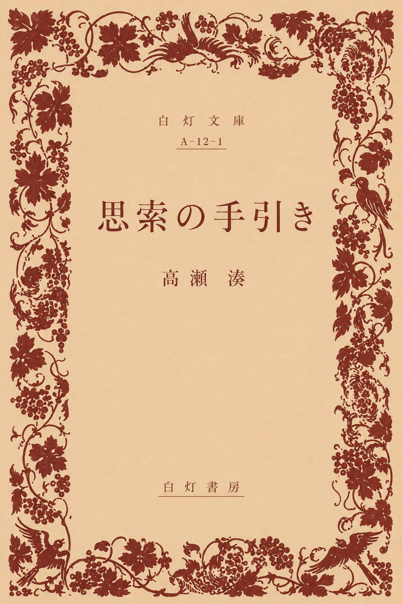
Philosophy
『思索の手引き』
日々の違和感、読書の断片、記憶の余白を手がかりに、思考の成り立ちを静かに辿る哲学エッセイ。
合わせたい珈琲：深煎りブレンド
本棚と選書
哲学・文学・エッセイを中心に、時代を超えて読み継がれる本を選んでいます。

Philosophy
日々の違和感、読書の断片、記憶の余白を手がかりに、思考の成り立ちを静かに辿る哲学エッセイ。
合わせたい珈琲：深煎りブレンド
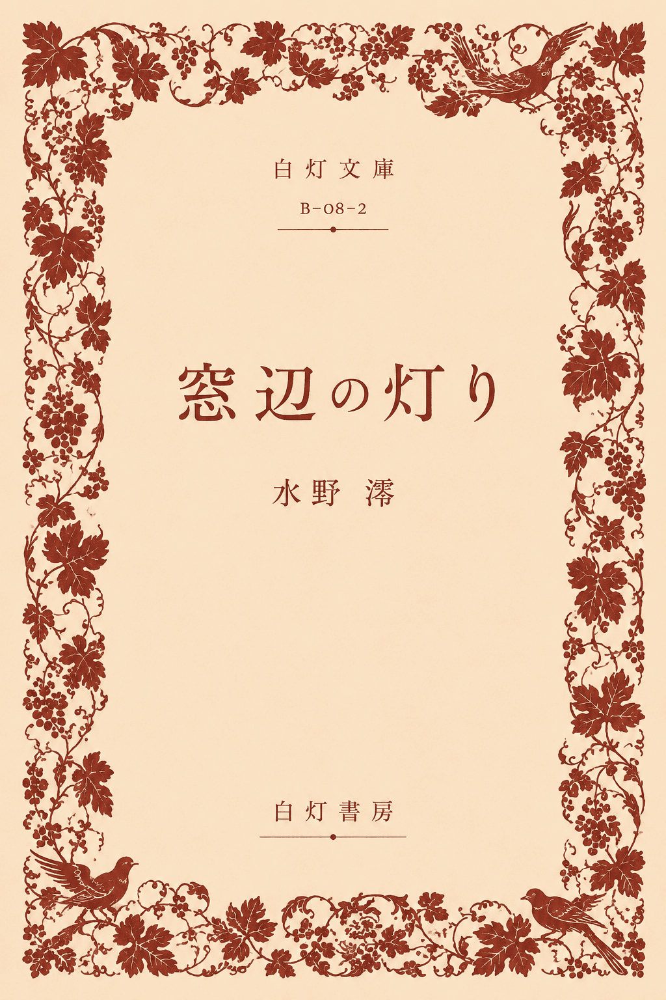
Literature
窓辺に差す光、古い部屋、待つ時間の気配を通して、日常の奥に沈む記憶を掬い上げる短編集。
合わせたい珈琲：カフェラテ
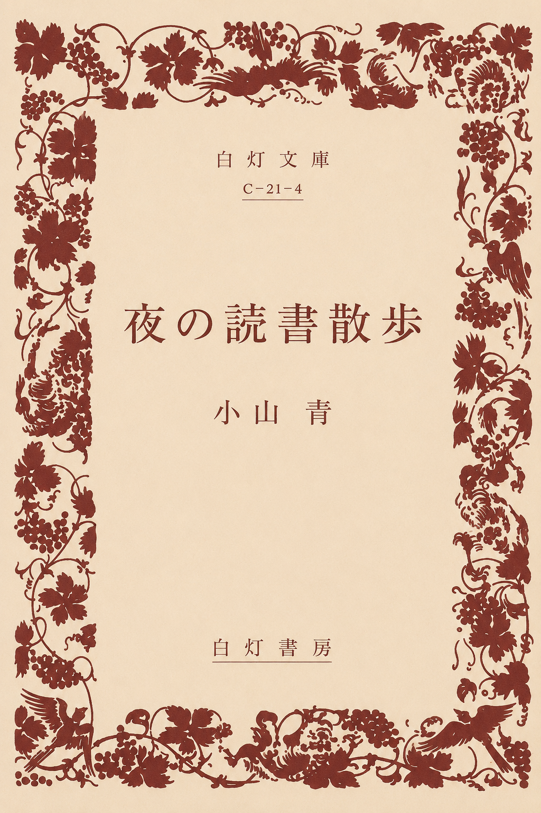
Essay
言いそびれた言葉、沈黙のあとに残る余白から、孤独と言葉の距離を見つめる一冊。
合わせたい珈琲：デカフェコーヒー
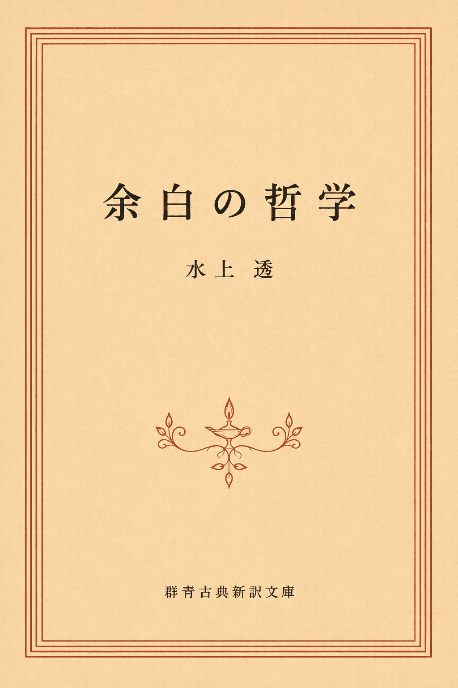
Philosophy
予定を埋めない時間、返事を急がない関係、何もしない午後に宿る自由をめぐる哲学的随筆。
合わせたい珈琲：本日の深煎り珈琲
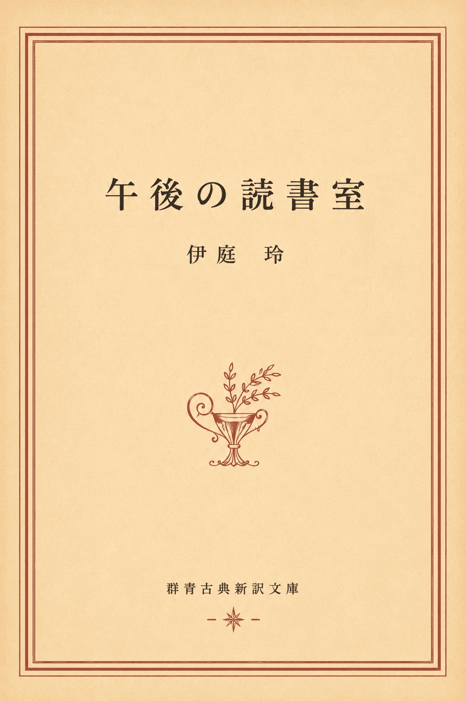
Literature
古い読書室を訪れる人々の記憶が、一冊の本を介してゆるやかに重なり合う連作掌編。
合わせたい珈琲：カフェラテ
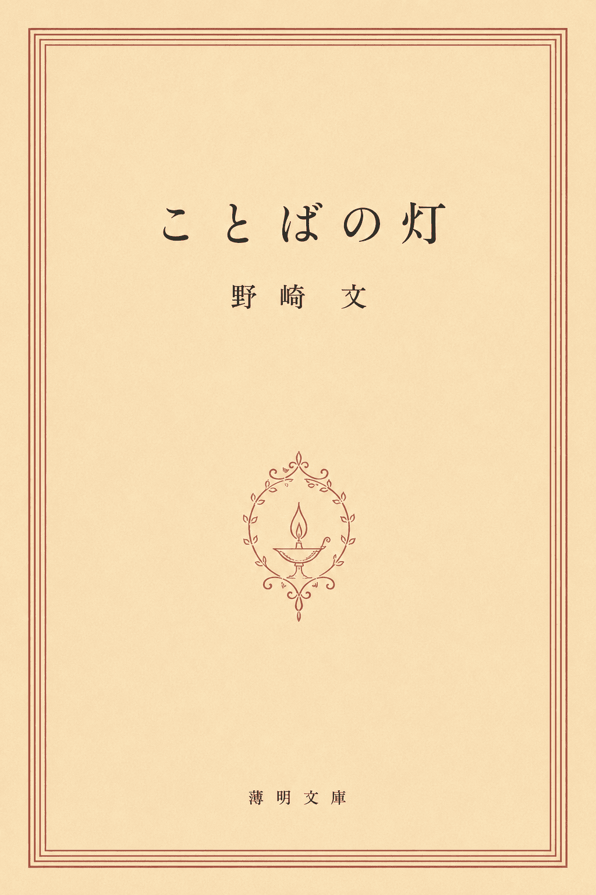
Literary Essay
詩、手紙、古いノートに残された言葉を辿り、忘れかけていた感情に静かな灯をともす文学エッセイ。
合わせたい珈琲：綴ルブレンド
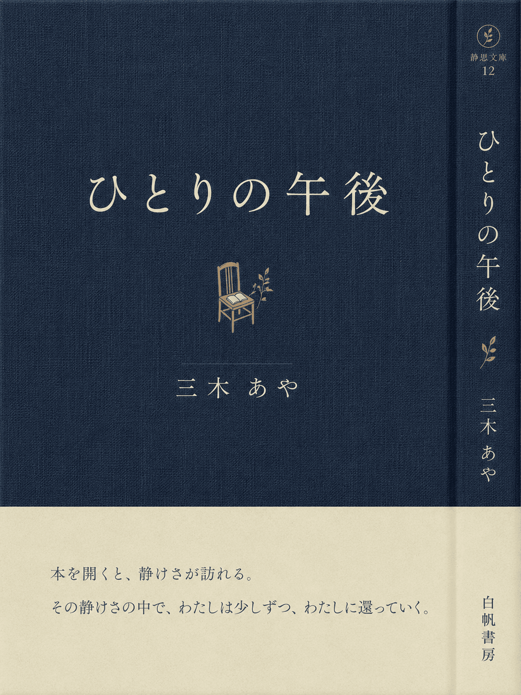
Essay
喫茶店、書店、川沿いの道。午後の断片を通して、ひとりで在ることの輪郭を描く随筆集。
合わせたい珈琲：デカフェコーヒー
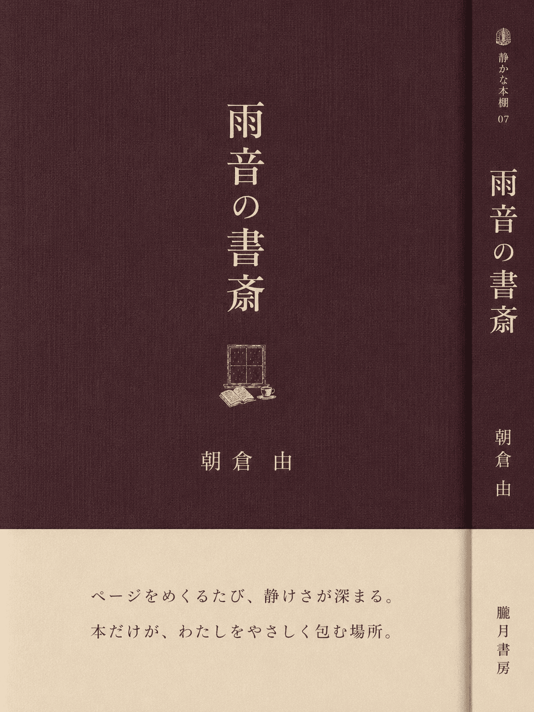
Essay
雨の日にだけ立ち上がる部屋、本棚、読書の記憶をめぐり、静けさの質感を丁寧に描く読書随筆。
合わせたい珈琲：カフェオレ
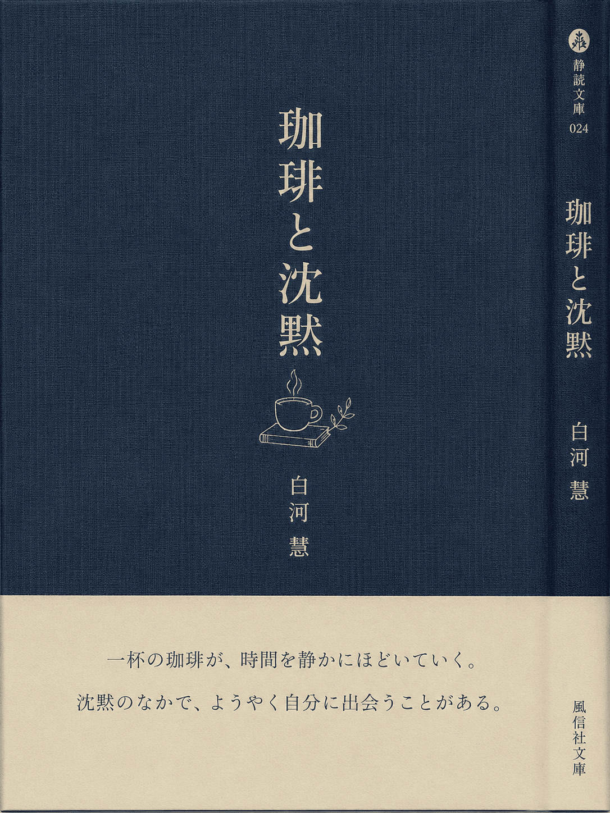
Coffee Essay
カップの音、湯気、店内に流れる沈黙を通して、言葉になる以前の思考を見つめる喫茶随筆。
合わせたい珈琲：本日の深煎り珈琲
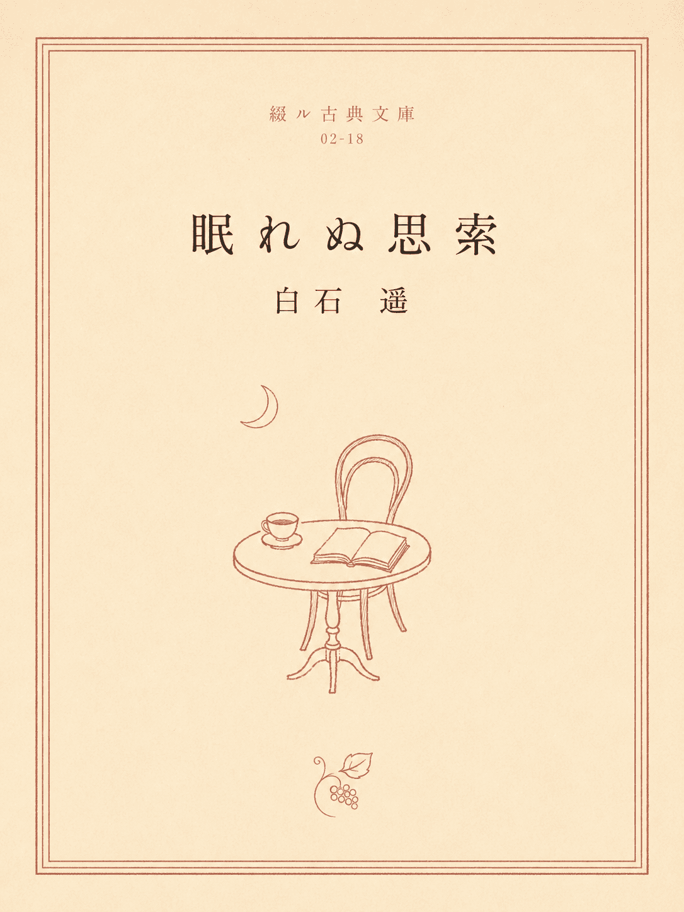
Philosophy
眠れない夜に浮かぶ不安、記憶、未完の問いを、答えに急がず朝へ引き渡す哲学的エッセイ。
合わせたい珈琲：季節の珈琲
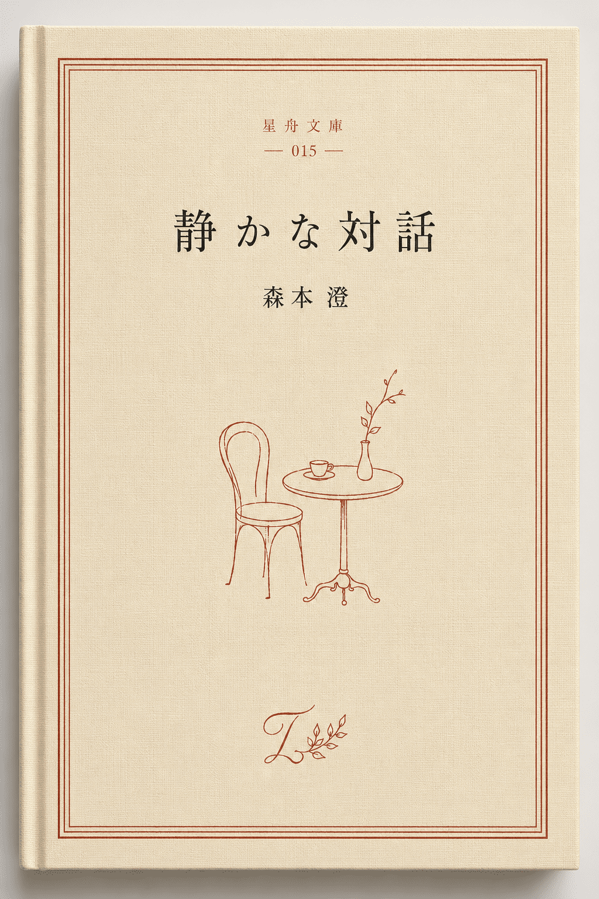
Dialogue
説得ではなく傾聴から始まる対話のあり方を、沈黙と余白の視点から考察する一冊。
合わせたい珈琲：カフェラテ
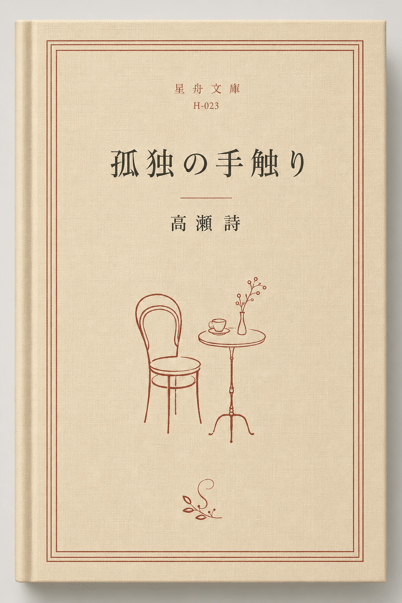
Essay
部屋、椅子、手帳、読後の沈黙をめぐり、孤独を寂しさではなく感受性として捉え直す内省的随筆。
合わせたい珈琲：水出しアイスコーヒー